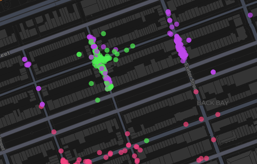

Grid cell illustration.
Each dot represents a single spatial bin (approximately 45 m × 50 m) that contains ticket-level observations falling inside that cell. When the dashboard is filtered by date range and violation type, those tickets are aggregated to the cell level to compute metrics such as total tickets and average tickets per day.
How the Dashboard Was Built
1) Data pipeline and aggregation strategy.
The dashboard is backed by ticket-level parking summons data (2024) that is standardized and enriched into a single, analysis-ready table, then summarized into a small set of Parquet “artifact” tables optimized for interactive filtering. We generate these artifacts with DuckDB (see the parquet generation workflow) and load them in Streamlit as read-only views, which keeps the web app responsive even when users apply multiple filters (date range, violation types, and offender cohorts). This design intentionally separates expensive feature engineering and aggregation from the interactive UI so the dashboard can run consistently in local and hosted environments.
2) Spatial gridding (map bins) and bin size.
Spatial patterns are summarized using a fixed latitude/longitude grid rather than variable administrative boundaries. Each ticket is assigned to a grid cell by rounding latitude and longitude to the nearest 0.0005 degrees (i.e., ROUND(lat / 0.0005) * 0.0005 and the same for longitude). In Boston (≈42.36° N), this corresponds to roughly ~55 meters in the north–south direction and ~41 meters east–west, which is fine-grained enough to capture block-level clustering while still aggregating enough events per cell to stabilize rates. The map layer renders each cell at its binned center coordinate, enabling fast rendering while preserving a consistent spatial resolution across the city.

3) Normalization and interpretation of mapped metrics.
Two metrics are computed from the same gridded aggregation: a raw total ticket count over the selected window, and an average-per-day rate. The average-per-day rate divides the aggregated counts by the total day-weight in the selection window, which makes cells comparable when users switch between short and long date ranges. This reduces the risk of interpreting “more days selected” as “more intense enforcement/violations” and helps highlight persistent hotspots rather than duration effects.
4) Color scheme choice (map mode vs heatmap mode).
In “Map” mode, we use a discrete, high-contrast palette designed for a dark basemap: light blue → dark blue → yellow → orange → red, with semi-transparency so dense areas don’t fully occlude the base map. The hue progression is intentionally intuitive (cool colors for low intensity, warm colors for high intensity) and remains legible against the CARTO Dark basemap. In “Heatmap” mode, we switch to a kernel-density-style visualization (pydeck HeatmapLayer) where intensity is driven by the selected metric (or by point count for individual ticket points), making it easier to perceive gradients and broader spatial structure.
5) Quantile binning and why we use it.
Parking ticket counts are heavy-tailed: a small number of cells can dominate the distribution, especially for popular violation types or downtown corridors. To prevent the map from collapsing into “almost everything looks the same,” the dashboard computes distribution cutoffs dynamically from the filtered data using the 20th, 40th, 60th, and 80th percentiles. Each cell is assigned to one of five bins (≤20%, 20–40%, 40–60%, 60–80%, >80%) and colored accordingly; the legend shows the numeric thresholds for the current filter state. This approach ensures the color scale uses the full palette across different filters, while keeping the interpretation grounded in relative intensity within the selected subset.